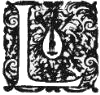

Présentation
de ce site

Présentationde ce site |
|
Un site Web sur le sujet de la facture d'orgues.
'HYDRAULE se veut d'abord être un petit centre de documentation consacré au sujet de l'orgue à tuyau en général et de sa facture en particulier. Mais, à l'instar de beaucoup d'autres, ce site, encore fort jeune, est en perpétuelle évolution. On ne s'étonnera donc pas que son contenu soit encore bien loin de ce qu'il promet... Aussi, pour aller dans ce sens, je suggère au lecteur de se fier au changement de couleur des liens de navigation une fois visitée la page dite « en construction » afin de ne pas retourner systématiquement sur celle-ci...
Depuis le mois de mars 1999, date de la première mise en ligne du site, beaucoup de gens m'ont fait part de leur étonnement du peu de réactualisations et de mises à jour face à l'ampleur du projet. S'il est exact que peu de textes ont été mis en ligne en une année et demi, il est aussi nécessaire que les internautes se rendent bien compte que la numérisation des textes anciens est un travail considérable qui prend un temps que seuls ceux qui l'ont pratiqué peuvent en estimer la valeur...
Le but avoué de l'Hydraule peut se décliner en trois points chronologiques :
- Mise en place de textes anciens de provenances diverses ; nous en sommes actuellement là et y resterons tant que la base documentaire ne se sera pas étoffée de manière suffisamment conséquente.
- Analyse de ces textes et mise en relation par le biais des liens hypertextes ; il y a déjà quelques textes liés de cette manière (Cavaillé et Viollet-le-Duc par exemple), mais ce n'est qu'une esquisse de ce qui peut advenir.
- Développement, à partir de cette base documentaire, d'une forme encyclopédique infiniment plus axée sur une approche interactive avec, par exemple, la possibilité d'opérations spécifiques à la facture d'orgues suffisamment fastidieuses ou complexes pour être confiées à une machine.
Je crois utile de rappeler ici que l'on ne construit jamais aucun édifice d'une certaine importance sans prévoir, à la base, de solides fondations. Je suis de ceux qui sont convaincus que la facture d'orgues du XXIe siècle aura, plus encore qu'au XXe, à se pencher sur son passé pour la simple raison que l'orgue, déclaré depuis six siècles instrument liturgique par excellence, ne semble pas, de par les faits, pouvoir le continuer, tout au moins pleinement. Or, tout objet ne peut survivre que s'il possède un sens et l'on ne peut nier que l'orgue, de par la désertification des églises chrétiennes qui l'ont depuis si longtemps hébergé, est en train de perdre le sien.
Pour éviter que cet instrument soit uniquement relégué au musée, il me semble qu'il n'y a pas d'autres solutions que celle consistant contradictoirement à en étudier profondément son histoire pour pouvoir mieux envisager son avenir. Cette voix est loin d'être royale car le travail a fournir est infiniment supérieur de celui des anciens qui n'avaient « qu'à » faire correspondre les aspirations de la société dans laquelle ils vivaient à leurs pratiques de facture. Or, peut-on vraiment aujourd'hui parler de correspondances entre la société dans laquelle nous vivons et notre usage de l'instrument roi à l'heure de la « musique » techno ? Ne nous leurrons pas : les amateurs d'orgues, éclairés ou pas, ne vivent pas leur passion au sein de ce siècle ou de celui qui s'annonce. En dehors de tout jugement qualitatif (ou jugement tout court), on ne peux pas nier que la liturgie n'est plus et, avec elle, le goût de l'orgue.
D'aucuns jugeront peut-être mes propos comme des paroles insultantes à l'égard des gens qui luttent pour sa survie. À ceux là je répondrai qu'une simple visite sur ce site devrait pouvoir les convaincre que je reste un ami de l'orgue, de sa facture et de son jeu. Et s'ils ne comprennent toujours pas, alors qu'ils passent leur chemin ; le Web regorge de sites faisant l'apologie de l'instrument fast food, prêt à consommer, sans réflexion ni remises en questions aucunes, fiers de mener cet instrument à sa perte à force d'équipements qui n'ont de moderne que le nom. Nous n'échapperons pas, à mon avis, à une profonde réflexion sur l'avenir de notre instrument, tant au sein des Églises que dans l'usage que l'on en fait en musique, et plus particulièrement en musique ancienne. Puisse ce site contribuer à l'ouverture de ce débat dont je suis persuadé que peu veulent l'ouvrir, tant il provoque les passions et tant il amènera, forcément, de douloureuses remises en questions.
Avis sur le Copyright.
Les informations et les images que vous lirez sur ce site sont libres de droit, c'est à dire que vous pouvez les copier autant de fois que vous le désirez et les faire connaître à vos amis, vos parents, votre petite soeur ou votre arrière grand-oncle qui, comme chacun le sait est un passionné d'orgues... Une petite restriction doit tout de même être apportée à cela : certains articles ou données sont communiqués accompagnés de leur nom d'auteur. Vous êtes donc priés de ne pas faire croire à d'aucuns que vous avez fait vous-même les relevés des tailles de tuyaux CAVAILLÉ COLL ou que vous êtes l'auteur du plan de la mécanique de tirage de soupape de l'orgue d'Allauch car ils ont été respectivement faits par Laurent PLET et Jean RENAUD d'une part et Pierre CHÉRON de l'autre. Si pourtant l'envie vous prend de vouloir publier les mêmes données sur un site Web, vous pouvez toujours m'écrire, ou, plus simplement, prendre directement contact avec les auteurs afin d'obtenir de leur part une autorisation de publication sur la toile.
La navigation
Dans la mesure du possible, j'ai toujours cherché à ce que l'Hydraule soit visible au moyen de n'importe quel navigateur sans restreindre la navigation à des logiciels commerciaux tels que le sont, par exemple, Netscape® ou Internet Explorer®. Il est toutefois indispensable que votre navigateur sache gérer les cadres (ou frames), car les présentations de données numériques telles que le sont les tableaux de tailles de tuyaux en sont vraiment facilités. Il est également conseillé de positionner la définition de l'écran à 800 × 600 pixels ou supérieur. Dans certains cas comme la consultation d'ouvrages en ligne, le mode plein écran s'impose pour le confort de lecture. Certains navigateurs le proposent comme un choix ordonné par une icône, sur d'autres, il est nécessaire de faire disparaître une à une les barres d'outils afin de libérer la place sur l'écran au maximum. Enfin, il est évident que le site n'est pas conçu pour être affiché avec une police de caractère de taille 72 ; aussi on choisira avec profit une taille normale comme les tailles moyennes proposé par certains navigateurs, généralement fixées à 12.
Tout le site est construit de façon arborescente ; il suffit pour s'y retrouver de procéder de façon logique. Imaginez que vous vous trouviez dans l'atelier d'un facteur d'orgues, lui même situé non loin d'un monastère. Vous voilà prêts à arpenter les lieux munis de votre souris... Plusieurs chemins vous sont possibles mais si vous ne connaissez pas vraiment le plan de ce site, je ne doute pas que vous aurez l'intuition de passer par le scriptorium où se trouve la bibliothèque pour y découvrir des ouvrages ou des relevés d'instruments.
Pareillement, si vous voulez rencontrer un facteur d'orgues ou un organiste, je vous conseille de passer par Ecclesia qui est un lieu où l'on apprend beaucoup...
La conception
Le site entier n'est pas conçu avec un éditeur de page HTML de type Netscape Composer® ou Microsoft Front Page® car je trouve toujours que ces logiciels imposent un code HTML qu'il est difficile de maîtriser. Chaque page de ce site est donc principalement mise en place avec un simple éditeur de texte accompagné - tout de même - par de petits programmes de ma composition qui corrigent le problème des accents et des tableaux de tailles de tuyaux d'orgues qui sont tous plus ou moins fait sur le même modèle. Il résulte à mon sens de cela une plus grande compréhension du code (que je vous invite à aller étudier si ce n'est déjà fait) ainsi qu'une grande simplicité de présentation, voulue, tant pour accélérer le temps de chargement que pour la facilité de lecture en ligne. Aussi ne trouverez-vous dans ce site que très peu d'animations de type Java® ou Javascript® car elle n'apportent, à mon sens, que peu à la lisibilité du texte, déjà suffisamment lourde sur un écran cathodique. Il y aura toutefois une exception notoire à ce principe lorsque je mettrais en ligne (dans l'ordinateur du scriptorium) quelques petits utilitaires écrits en Javascript® de ma composition et qui ne devraient pas déplaire aux facteurs d'orgues éclairés... Il faudra alors se prémunir d'un navigateur qui supporte ce langage, ce qui ne devrait pas poser de problèmes particuliers.